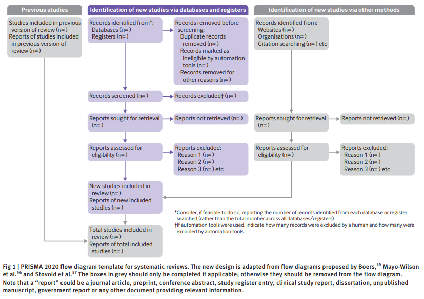

17 Dokumentointi
Dokumentoinnin tarkoituksena on tehdä kirjallisuuskatsauksesta selkeä, säännönmukainen ja läpinäkyvä. Näiden kautta katsaus on teoriassa myös toistettavissa, eli toiset tutkijat voivat tarkistaa työmme tai toteuttaa saman katsauksen myöhemmässä vaiheessa (esim. muuttaen aikarajauksia).
Dokumentoinnin tukena käytämme PRISMA 2020 -protokollaa, eli Preferred Reporting Items for Systematic reviews and Meta-Analyses, vuoden 2020 päivitys (Page ym. 2021).
PRISMA-protokolla tukee standardisoitua dokumentointia, ja sisältää kolme osaa:
- PRISMA 2020 item checklist
- PRISMA 2020 for Abstracts checklist
- PRISMA 2020 flow diagram
Item checklist, eli julkaisun tarkistuslista, sisältää 27 kohtaa, jotka pitäisi mainita kirjallisuuskatsauksen julkaisussa (meillä: hankkeen loppuraportissa sekä opinnäytetyössä).
Abstracts checklist, eli tiivistelmien tarkastuslista, sisältää taas 12 kohtaa, jotka pitäisi erikseen mainita tutkimusjulkaisujen tiivistelmissä.
Flow diagram, eli kulkukaavio, esittää visuaalisesti kirjallisuuskatsauksen karsintaprosesseja - millä tavoin löydettyä kirjallisuutta karsittiin, ja kuinka monta tulosta mikäkin haun prosessi tuotti?
17.1 Julkaisun tarkistuslista
PRISMA:n julkaisutarkistuslista sisältää, kuten mainittu, 27 kohtaa, jotka pitäisi löytyä tutkimusartikkelista. Tätä voi siten hyödyntää itse tutkimusjulkaisun kirjoittamisessa: kun nämä asiat mainitaan oikeissa kohdissa, on jo kirjoittanut reilun osan itse julkaisusta.
Tarkistuslistan voi liittää julkaisuun liitetiedostona. Tuolloin jokaiselle kohdalle merkitään, mistä kohtaa julkaisua tiedon löytää. Tämä helpottaa lukijoiden tarkistustyötä suunnattomasti, eli on hyvin suositeltavaa!
Vapaasti käännettynä englannista tarkistuslista näyttää seuraavalta:
| # | Osa ja aihe | Tarkistuskohta |
|---|---|---|
| 1 | Otsikko | Otsikko osoittaa tutkimuksen olevan systemaattinen kirjallisuuskatsaus. |
| 2 | Tiivistelmä | Katso tiivistelmän tarkistuslista. |
| Johdanto | ||
| 3 | Tutkimuksen syy | Kuvaile miksi katsaus on tehty, nykyisen tiedon valossa. |
| 4 | Tavoitteet | Kirjoita katsauksen tavoitteet tai tutkimuskysymykset selkeästi. |
| Menetelmät | ||
| 5 | Kriteeristö | Määrittele inkluusio- ja ekskluusiokriteerit sekä miten tutkimuksia ryhmiteltiin synteesivaiheessa (jos esim. tarkasteltiin eri tutkimusmenetelmien eroja). |
| 6 | Tietolähteet | Määrittele kaikki tietokannat, rekisterit, verkkosivut, organisaatiot, lähdeluettelot ja muut lähteet, joista haettiin tai joita konsultoitiin tutkimuskirjallisuuden löytämisessä. Määrittele päivämäärä jolloin jokaista lähdettä konsultoitiin tai jolloin haettiin tietoa viimeisen kerran, eli tuorein hakupäivämäärä lähteille erikseen. |
| 7 | Hakustrategia | Kuvaile koko hakustrategia jokaiselle lähteelle, ml. kaikki filtterit ja rajoitukset joita käytettiin. |
| 8 | Valintaprosessi | Kuvaile millä tavoin kirjallisuutta arvioitiin inkluusiokriteerien valossa, ml. kuinka monta tutkijaa tarkistivat jokaisen tutkimuksen, työskentelivätkö he erikseen vai yhdessä, sekä mahdollisesti käytetyt automaatiotyökalut (esim. duplikaattien tunnistus Excelissä). |
| 9 | Tiedonkeräysprosessi | Kuvaile millä tavoin tietoa kerättiin lopullisista tutkimuksista, ml. kuinka monta tutkijaa ottivat osaa tähän prosessiin, työskentelivätkö he erikseen vai yhdessä, sekä mahdollisesti käytetyt automaatiotyökalut. |
| 10a | Tietokohteet | Kuvaile kaikki riippuvaiset muuttujat, jotka haettiin lopullisista tutkimuksista. Määrittele, olivatko kaikki tulokset yhteensopivia toistensa kanssa (verrannollisia). |
| 10b | Kuvaile kaikki muuttujat, jotka haettiin lopullisista tutkimuksista (esim. sosiodemografiset muuttujat, tutkimusten metatietoja kuten rahoituslähteet). Kuvaile myös kaikki mahdolliset tilastolliset oletukset puuttuvasta datasta. | |
| 11 | Laadullinen virhemittausarviointi | Kuvaile menetelmät, joilla arvioitiin lopullisten tutkimusten virhemittausta, ml. kuinka monta tutkijaa ottivat osaa tähän prosessiin, työskentelivätkö he erikseen vai yhdessä, sekä mahdollisesti käytetyt automaatiotyökalut. |
| 12 | Tulos-/yhteysmitat | Määrittele kaikki riippuvaisiin muuttujiin liittyvät ja tarkistetut yhteysmitat (esim. korrelaatiokertoimet, prosenttierot, regressiokäyrät). Koskee vain niitä mittoja, joita tarkasteltiin synteesin yhteydessä! |
| 13a | Synteesimenetelmät | Määrittele miten lopulliset tutkimukset todettiin kuuluvan tiettyihin vertailuryhmiin (esim. vertaamalla kohtaan #5). |
| 13b | Kuvaile kaikki datakäsittelymenetelmät, esim. datamuunnokset tai puuttuvien tulosten käsittely. | |
| 13c | Kuvaile kaikki visualisointi- ja taulukointimenetelmät. | |
| 13d | Kuvaile millä menetelmillä tuloksia syntetisoitiin. Jos kyseessä on meta-analyysi, kuvaile meta-mallia. | |
| 13e | Kuvaile kaikki mahdolliset menetelmät joilla selvitettiin eroja ryhmien välillä (esim. jos kahden menetelmän välillä esiintyi eroja riippuvaisella muuttujalla). | |
| 13f | Kuvaile mahdolliset herkkyysanalyysit. | |
| 14 | Määrällinen virhemittausarviointi | Kuvaile menetelmät joilla tarkistettiin virhemittauksen riskiä synteesissä (esim. puuttuvien julkaisujen kynnysvaikutuksia). |
| 15 | Varmuusarvio | Kuvaile mahdolliset menetelmät, joilla päädyttiin synteesissä tiettyyn tiedon laadun varmuusarvioon. |
| Tulokset | ||
| 16a | Tutkimusten valinta | Kuvaile seulonta- ja valintaprosessin askeleet, ml. määrät jokaisessa osakohdassa. Katso kulkukaavio. |
| 16b | Vittaa tutkimuksiin, jotka näyttäisivät täyttävän kriteeristön mutta kuitenkin jätettiin pois, ja kuvaile miksi nämä jätettiin pois. | |
| 17 | Tutkimusten piirteet | Viittaa jokaiseen valittuun tutkimukseen ja kuvaile sen yleispiirteitä. |
| 18 | Tutkimuskohtaiset virhearviot | Arvioi jokaiselle tutkimukselle sen mahdolliset virhemittauslähteet. |
| 19 | Tulokset | Esitä jokaisen tutkimuksen riippuvaisen muuttujan tilastot (sekä sijainti- ja hajontaluvut, että merkitsevyyslukuja kuten luottamusvälejä), mieluisesti taulukkona tai kuvana. |
| 20a | Synteesien tulokset | Jokaiselle synteesille, kuvaile lyhyesti sen piirteitä ja mahdollisia virhemittausriskejä. |
| 20b | Esitä kaikkien tilastollisten testien tulokset. Meta-analyysissa, esitä myös meta-mallin tuloksia ja luotettavuuteen liittyviä tilastollisia arvioita. Ryhmävertailuissa, kuvaile vaikutuksen syy-seuraus-suunta (mikä aiheuttaa minkä?). | |
| 20c | Esitä kaikki tulokset mahdollisista ryhmäerovertailuista ja -selvityksistä. | |
| 20d | Esitä kaikki herkkyysarviotulokset. | |
| 21 | Virhemittausraportti | Arvioi virhemittauksen riskit puuttuvien tutkimusten takia jokaiselle synteesille. |
| 22 | Synteesien varmuudet | Arvioi syntetisoidun tiedon varmuus jokaiselle synteesille. |
| 23a | Keskustelu | Anna yleinen tulkinta tuloksista muun tiedon valossa. |
| 23b | Keskustele todisteiden (löydettyjen tutkimusten ja niiden pohjalta tehtyjen synteesien) rajoituksista ja heikkouksista. | |
| 23c | Keskustele katsauksen toteutusprosessin rajoituksista ja heikkouksista. | |
| 23d | Keskustele katsauksen tulosten merkityksestä käytännön työlle, päätöksenteolle ja jatkotutkimukselle. | |
| Muu tieto | ||
| 24a | Rekisteröinti ja protokollat | Ilmaise tutkimuksen rekisteröintitiedot, ml. rekisterin nimi ja rekisteröintitunnus. Jos tutkimusta ei rekisteröity, ilmaise tämä. |
| 24b | Ilmaise jos arviointiprotokollaan on vapaa pääsy. Jos protokollaa ei tehty, ilmaise tämä. | |
| 24c | Huomioi kaikki mahdolliset poikkeukset rekisteröidystä arviointiprotokollasta ja kerro miksi protokollasta poikettiin. | |
| 25 | Tuki | Kuvaile kirjallisuuskatsauksen taloudellinen ja ei-taloudellinen tuki, sekä tukijoiden rooli katsauksen teossa. |
| 26 | Ristiriitaiset intressit | Ilmoita katsauksen tekijöiden mahdolliset ristiriitaiset intressit. |
| 27 | Datan, koodin ja muiden materiaalien saatavuus | Ilmoita missä määrin seuraavat metatiedot ovat saatavilla, ja mistä: tiedonkeruun mallipohjat, kerätty tieto tutkimuksista, kaikki analyysissa käytetty tieto, analyysikoodi, muut katsauksessa käytetyt materiaalit. |
Lista on hyvin pitkä, ja keskittyy pitkälti menetelmien avoimeen kuvailuun. Kohdassa Muu tieto on tutkimuksille yleisiä avoimuusvaatimuksia.
Listasta voi myös poiketa. Tämä on parasta tehdä harkiten, mutta usein listan kaikki kohdat eivät päde omaan kirjallisuuskatsaukseen (esim. jos ei vertaile määrällisiä tuloksia, vaan tekee ns. laadullisen meta-analyysin). Tuolloin pitää kuitenkin merkitä listaan tai tekstiin, että katsaus poikkeaa tietyissä kohdin PRISMA-protokollasta. On myös hyvä kertoa miksi.
17.2 Tiivistelmän tarkistuslista
Tiivistelmän tarkistuslista on lyhyempi. Jos tiivistelmä tiivistää tutkimusjulkaisun tärkeimmät tiedot lyhyeksi tekstiksi, samoin tiivistelmän tarkistuslista tiivistää julkaisun tarkistuslistan tärkeimmät tiedot.
Käytännössä tiivistelmästä tulisi löytyä seuraavat kohdat julkaisujen tarkistuslistasta:
Otsikko (kohta 1)
Tutkimuksen syy (kohta 3)
Kriteeristö (kohta 5)
Tietolähteet (kohta 6)
Laadullinen virhemittausarviointi (kohta 11)
Synteesimenetelmät (kohta 13, tiivistettynä kaikki alakohdat)
Sisällytetyt tutkimukset (kohta 16a, vain lopullinen määrä; myös tutkimusten kokonaisosallistujamäärä, N)
Synteesien tulokset (kohta 20, erittäin tiivistettynä kaikki alakohdat)
Tulosten rajoitukset (kohdat 23b-c, tiivistettynä)
Tulkinta (kohta 23a)
Rahoitus (kohta 25, vain ensisijainen taloudellinen tuki)
Rekisteröinti (kohta 24a)
17.3 Kulkukaavio
Kirjallisuuskatsauksen hakuprosessin aikana tuloksia suodatetaan useasti, jotta saanti ja tarkkuus maksimoitaisiin. Myös tämä suodatusprosessi tulee dokumentoida!
Prosessin aikana on hyvä kirjoittaa muistiinpanoja jokaisesta askeleesta. Seuraavat tukikysymykset voivat auttaa tärkeimpien asioiden dokumentoinnissa:
Millä työkaluilla kävit läpi tutkimuksia?
Miten etesit epävarmojen tulosten kanssa?
Missä askelissa toteutit seulonnan ja arvioinnin?
Toinen työkalu on PRISMA-protokollan kulkukaavio. Kaavioon merkitään jokaisen seulonta- ja arviointiaskeleen kohdalla sisällytetyt ja poistetut tutkimusmäärät. Toisin sanoen: miten moni tutkimus läpäisi kohdan, ja miten moni tippui pois?
Kulkukaavio näyttää tältä:

Harmaat laatikot täytetään vain tarpeen vaatiessa; violetit laatikot täytetään aina, kun kyseessä on systemaattinen kirjallisuuskatsaus.
Hankkeen kannalta emme käytä Previous studies -laatikkoa ollenkaan, joten sen voi jättää pois.
Vapaat käännökset englannista ovat kutakuinkin:
“Tutkimusten tunnistus tietokannoista ja rekistereistä”
- Tutkimuksia tunnistettu kohteista:
- Tietokannat (n = )
- Rekisterit (n = )
- --> Tutkimuksia poistettu ennen seulontaa:
- Poistetut duplikaatit (n = )
- Merkitty automaatiotyökalulla epäsopivaksi (n = )
- Muista syistä poistettu (n = )
- Seulotut tutkimukset (n = )
- --> Poisseulotut tutkimukset (n = )
- Haettavat tutkimukset (n = )
- --> Tutkimukset, joita ei voitu hakea (n = )
- Tarkistetut tutkimukset (n = )
- --> Poistetut tutkimukset (eriteltynä syittäin, n = )
- Sisällytetyt tutkimukset (n = )
- Muista lähteistä sisällytetyt tutkimukset (n = ; ks. alla)
“Tutkimusten tunnistus muista lähteistä”
- Tutkimuksia tunnistettu kohteista:
- Verkkosivut (n = )
- Organisaatiot (n = )
- Viitehakeminen (n = )
- (lisää tarvittaessa)
- Haettavat tutkimukset (n = )
- --> Tutkimukset, joita ei voitu hakea (n = )
- Tarkistetut tutkimukset (n = )
- --> Poistetut tutkimukset (eriteltynä syittäin, n = )
Tätä kulkukaaviota kannattaa täytellä prosessin aikana esimerkiksi taulukkoon tai tekstitiedostoon. Voit myös joutua palaamaan aikaisempiin kohtiin useasti.
Kun olet varma, että hakuprosessi ei enää muutu (eli olet suorittanut prosessin loppuun ja löytänyt viimeisetkin tutkimukset), voit käyttää tätä sivua tuottaaksesi automaattisesti graafisen version kulkukaaviosta. Näin et joudu käsin rakentamaan kaaviota! Jos haluat kääntää kaavion toiselle kielelle, tämä on myös mahdollista yllä olevalla sivulla käyttäen valmista CSV-käännöstaulukkoa.
17.4 Lyhyesti vielä dokumentoinnista
Koska dokumentoinnin pääajatuksena on mahdollistaa tutkimuksen toistettavuus, hyvä tapa tarkistaa oma dokumentointi on aina koittaa toistaa prosessi vain omilla muistiinpanoillasi. Jos et pysty tähän, dokumentointi on pettänyt!
Dokumentoinnissa tärkeintä on kuvailla rehellisesti, mitä on tehnyt - vaikka olisikin poikennut protokollista. Toistettava, keskivertainen tutkimus on hyödyllisempi tutkijoille kuin ei-toistettava, täydellisesti tehty tutkimus.
Muista myös kirjoittaa muistiinpanoja koko prosessin ajan! Dokumentointia ei kannata missään nimessä jättää loppuun, koska tuolloin et kuitenkaan enää muista yksityiskohtia.
Samaan henkeen: muista myös kirjoittaa muistiinpanosi auki tekstiksi tasavälein! Jos työstät katsausta puoli vuotta, ja prosessin lopussa avaat muistiinpanovihkosi (tai OneNote-kansiostosi) ensimmäistä kertaa, tulet aivan varmasti ahdistumaan muistiinpanojen määrästä ja epäselvyydestä. Parempi kirjoittaa ajoissa, ja viilata tekstiä tai jopa muuttaa isoja osioita myöhemmin.